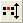

Origin 2022は、ステータスバーに表示されるアクティブワークシートの統計情報にマスクされたデータ数やマスクされていないデータ数を追加しました
マスク機能は、ある一部のデータだけを解析したり、異常値を解析対象から外して解析を行なうような時に役に立ちます。データのマスク、マスク解除により、リンクされた操作の再計算が実行されます。
Origin 2022は、ステータスバーに表示されるアクティブワークシートの統計情報にマスクされたデータ数やマスクされていないデータ数を追加しました |
このツールバーボタンは、マスクをかけたり、マスクをかけたデータの操作のために使用できます。一度データが選択されると、グラフも含まれることに注意してください（グラフの選択については、次のセクションのプロット操作・オブジェクト作成ツールバーボタンを参照してください）。
| アクション | ツールバーボタン | ショートカットメニュー | Notes |
|---|---|---|---|
| マスクを掛ける | マスク: 範囲のマスク | Mask the selected data range.マスクされたデータはグラフやワークシート上において異なる色で表示されます。 | |
| マスク取り外し | マスク: マスク取り外し | 選択したデータ範囲のマスクを取り外します。マスクを取り外したデータは解析に含まれ、通常どおりグラフやワークシートに表示されます。 | |
| マスクの逆転 | マスク: マスクの逆転 | グラフにおいて、アクティブなデータセット内のマスクされた点とマスクされていない点を入れ替えます。 | |
| マスクカラー変更 | マスク：次のマスクカラー | グラフにおいて、マスクされたデータ範囲の表示カラーを変更します。 | |
| マスクポイントの表示/非表示 |  | マスク: 非表示モード | マスクされたポイントの表示のオンとオフを、画面上および印刷・エクスポートされたグラフにおいて切り替えます。 |
| マスク解除 | マスク:マスク解除 | ワークシート内のマスクされたデータすべてのマスクを解除します。オフにすると、グラフやワークシートにおいて、すべてのデータポイントが分析され、印刷およびエクスポートされたグラフに含まれます。 |
Origin 2022以降、ステータスバーはマスクされたデータ数やマスクされていないデータ数をシートに表示できます。 |
Origin 2021以降、デフォルトのマスクモードに変更が加えられました。
|
グラフウィンドウをクリックして、アクティブにします。
| 現プロットを対象にマスクを付加する | アクティブレイヤの全てのプロットのポイントをマスク | 目的 |
|---|---|---|
| 矩形の範囲ででマスクを掛けます。矩形内のデータポイントのみマスクされます。 | ||
| フリーハンドで囲んだ領域のデータポイントをマスクします。フリーハンドでドラッグして囲んだ領域内のデータポイントのみマスクされます。 | ||
| 行インデックスによって、データポイントをマスクします。選択した範囲の最小、最大のインデックス番号間の全てのデータポイントがマスクされます。マスクされるデータが矩形の範囲内に入っているかどうかは関係ありません。 |
グラフウィンドウ上でデータポイントからマスクを外すには、
ワークシートデータ（セル範囲または列全体）を選択すると、ミニツールバーのデータをマスクするボタンが有効になります。ボタンをクリックすると、選択したデータに対してマスクを有効化あるいは無効化します。
ワークシートデータを条件によってマスキングするためのツールがあります(例: <= 0)。